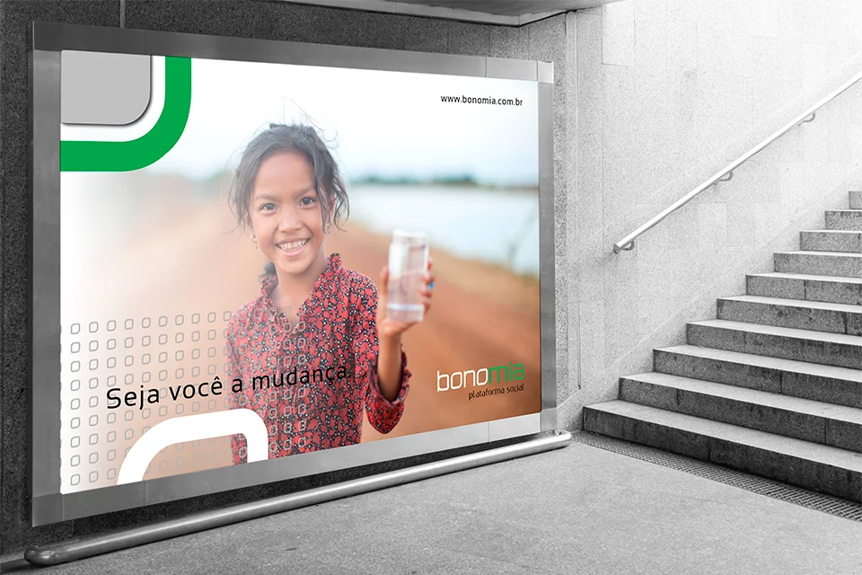
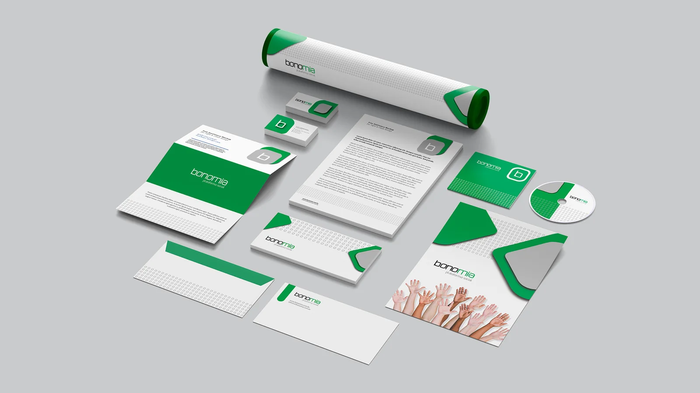
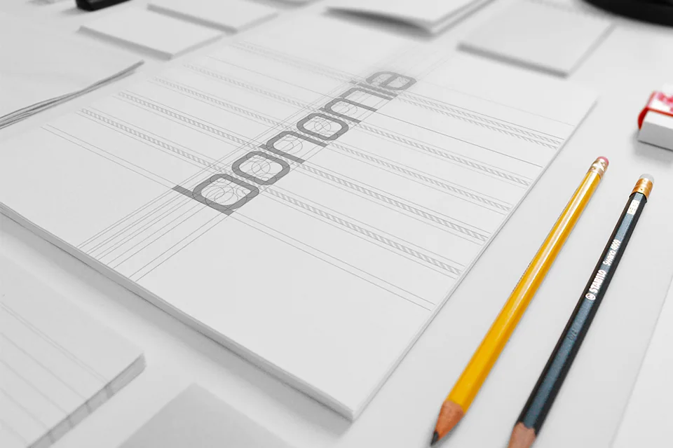
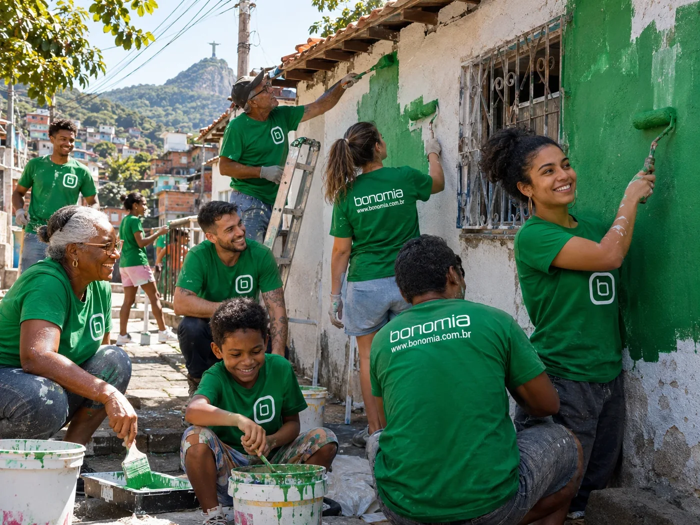

Bonomia
Projetando confiança para o impacto social: organizar campanhas e caminhos de participação em uma plataforma digital de mobilização social.




Interface web — mensagem de impacto social, categorias e navegação por campanhas.
Contexto
O Bonomia é uma plataforma social de campanhas, cujo convite principal é “Ajude quem precisa!”. O desenho da experiência precisa superar um problema recorrente das interações solidárias: a vontade de contribuir pode existir, mas transformar essa intenção em participação requer clareza sobre as causas, credibilidade e um caminho de ação simples.
A interface combina uma mensagem de mobilização social com acesso a campanhas, categorias, login e participação. As causas ficam no centro da navegação, e o ambiente digital aproxima iniciativas e pessoas dispostas a apoiá-las.
- Setor
- Impacto social · campanhas
- Organização
- Bonomia (plataforma social)
- Período
- Não informado
- Meu papel
- Pesquisa em UX · Discovery · Estratégia de produto
Problema
Como transformar a vontade de ajudar em participação com confiança?
Quem deseja apoiar uma causa precisa entender rapidamente o que está sendo solicitado e por que confiar na informação apresentada. Ao mesmo tempo, quem divulga uma campanha depende de visibilidade e de uma estrutura compreensível para apresentar sua necessidade. O desafio consiste em equilibrar descoberta, transparência e facilidade de engajamento.
Pergunta de pesquisa
Questão central
Como podemos ajudar pessoas a encontrar causas relevantes, compreender o propósito das campanhas e avançar com confiança até uma forma concreta de participação?
- Q.01Como ajudar as pessoas a encontrar causas relevantes?
- Q.02Como tornar compreensível o propósito de cada campanha?
- Q.03Como levar a pessoa, com confiança, a uma forma concreta de participação?
Partes interessadas
Os stakeholders principais do modelo de referência são pessoas apoiadoras, organizações ou responsáveis por campanhas, beneficiários, administradores da plataforma e eventuais parceiros de pagamento e verificação.
A cena reúne apoiadores e comunidade em uma ação de mobilização, todos com a camiseta da marca. Os papéis efetivamente implementados na plataforma não estão detalhados na captura de tela.

Apoiadores · BeneficiáriosMobilização em campoMetodologia
- 01
Entender - 02
Explorar - 03
Conectar - 04
Projetar - 05
Validar
| Método | Objetivo | Base de análise | Etapa |
|---|---|---|---|
| Estudo de motivações e barreiras | Entender por que e como as pessoas contribuem | Intenção de apoiar e esforço aceitável | Entender |
| Arquitetura de informação | Organizar as causas para facilitar a escolha | Navegação por campanhas e categorias | Explorar |
| Sinais de confiança | Identificar o que sustenta a credibilidade de uma campanha | Informações verificáveis e expectativas claras | Conectar |
| Análise dos fluxos de participação | Descrever o caminho do interesse à ação | Login, participação e confirmação | Projetar |
Métodos adequados incluiriam entrevistas, card sorting e testes de usabilidade; a execução histórica desses estudos não pode ser inferida do mockup.
Pesquisa
4
Itens de navegação: Campanhas, Categorias, Login e Participar
4
Categorias em destaque na primeira tela
5
Perguntas centrais de pesquisa
5
Grupos de partes interessadas
As perguntas centrais são: como uma pessoa decide qual causa apoiar? Que informações considera indispensáveis? Como avalia credibilidade? Qual é o nível de esforço aceitável para participar? E como os responsáveis por campanhas apresentam sua proposta?
Responder a elas seria essencial para validar a arquitetura mostrada. Os números descrevem o material apresentado; entrevistas, horas de campo e participantes não foram informados.
Evidências
“Ajude quem precisa!”
E.01 — Site · chamada principal
“Plataforma Social”
E.02 — Site · identificação
Navegação por “Campanhas”, “Categorias”, “Login” e “Participar”
E.03 — Observação · navegação
Seção “Categorias”, com o atalho “Ver todos”
E.04 — Site · exploração por causas
“Seja você a mudança”
E.05 — Mídia urbana
“bonomia · plataforma social”, em verde, branco e cinza, com o padrão de pontos
E.06 — Identidade e papelaria
Esses elementos comprovam uma intenção de orientar a descoberta e a conversão para participação; não documentam o fluxo completo de doação.
Descobertas
- I.01
A arquitetura de categorias pode reduzir a dificuldade de escolher entre muitas causas.
Evidências · E.03 · E.04
- I.02
Uma chamada emocional desperta o interesse inicial e leva a pessoa a explorar.
Evidências · E.01 · E.05
- I.03
Motivação e confiança são coisas diferentes: uma mensagem forte atrai, mas contribuir exige informações verificáveis e expectativas claras.
Evidências · E.01 · E.02
Jornada / Ecossistema
Curva ilustrativa da experiência esperada, sem dados medidos. A captura sustenta as primeiras etapas e a intenção de participação; detalhes de contribuição, pagamento e pós-doação não são visíveis.
Oportunidades
- O.01 · I.01
Como podemos permitir uma comparação significativa entre campanhas?
- O.02 · I.03
Como podemos priorizar contexto e transparência em cada campanha?
- O.03 · I.03
Como podemos reduzir a fricção de entrada, explicar o destino do apoio e apresentar estados claros de contribuição?
- O.04 · I.02
Como podemos atender a diferentes intenções: doar, compartilhar, participar ou cadastrar uma campanha?
Impacto
1
Plataforma web com arquitetura inicial de descoberta e participação
4
Peças que apresentam a marca e a plataforma: site, mídia urbana, papelaria e construção do logotipo
O impacto comprovável é a materialização de uma proposta web orientada à descoberta de causas e à participação social, com arquitetura inicial visível e uma identidade que atravessa o site, a mídia urbana e a papelaria. A confiança, que é parte do valor da proposta, ganha uma forma reconhecível em cada ponto de contato.
Não há evidências fornecidas sobre campanhas publicadas, montantes arrecadados, doadores ativos ou beneficiários atendidos.
Entregáveis
- ENT.01
Interface web da plataforma: chamada de mobilização, navegação por campanhas e categorias, login e participação
Formato · interface web · Implantação não informada
- ENT.02
Identidade visual “bonomia · plataforma social”, do logotipo à papelaria
Formato · identidade visual · Produção não informada
- ENT.03
Mídia urbana com a mensagem “Seja você a mudança”
Formato · comunicação · Veiculação não informada
Recomendação
| Frente | Recomendação | Indicador | Base |
|---|---|---|---|
| F1 | Adotar um modelo de informação consistente para campanhas: objetivo, responsável, atualização e chamada de ação inequívocos | Descoberta de campanhas | O.01 · O.02 |
| F2 | Validar as nomenclaturas das categorias | Avanço para a ação | O.01 · I.01 |
| F3 | Testar a compreensão do fluxo em dispositivos móveis | Conclusão do processo e percepção de confiança | O.03 · O.04 |
Esses indicadores mostrariam se a confiança construída na interface se converte em participação.
Aprendizados
O que aprendi
Em produtos sociais, confiança não é detalhe de interface: é parte da própria proposta de valor.
O que levo adiante
Pesquisa e estratégia precisam alinhar a motivação emocional à informação necessária para decisões responsáveis.